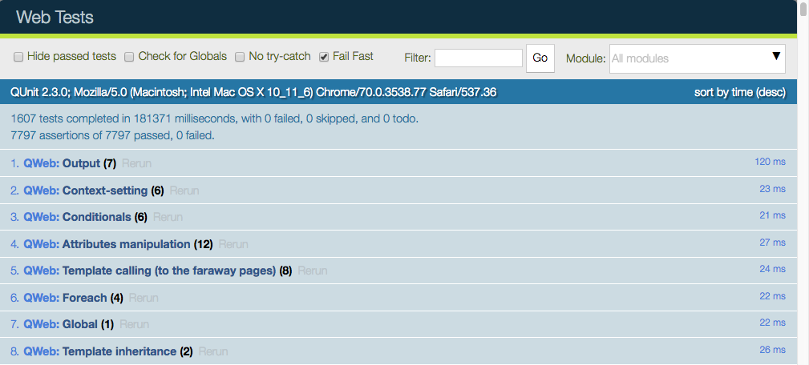

Есть много способов протестировать приложение. В Odoo у нас есть три вида тестов
- Модульные тесты Python (см. «Тестирование кода Python»): полезны для тестирования бизнес-логики модели
- Модульные тесты JS (см. «Тестирование кода JS»): полезно для тестирования кода javascript в отдельности
- Туры (см. «Интеграционное тестирование»): туры имитируют реальную ситуацию. Они гарантируют, что части python и javascript правильно общаются друг с другом.
Тестирование кода Python
Odoo предоставляет поддержку для тестирования модулей с использованием unittest.
Чтобы написать тесты, просто определите подпакет `` tests`` в вашем модуле, он будет автоматически проверен на наличие тестовых модулей. Тестовые модули должны иметь имя, начинающееся с `` test_``, и должны быть импортированы из `` tests / __ init __. Py``, например
your_module
|-- ...
`-- tests
|-- __init__.py
|-- test_bar.py
`-- test_foo.py
и `` __init __. py`` содержит
from . import test_foo, test_bar
Предупреждение
тестовые модули, которые не импортированы из `` tests / __ init __. py``, не будут запущены
Организатор теста просто запустит любой тестовый случай, как описано в официальной документации для unittest, но Odoo предоставляет ряд утилит и помощников, связанных с тестированием контента Odoo (в основном модулей):
class odoo.tests.common.TransactionCase(methodName='runTest')[исходный код]
TestCase, в котором каждый метод теста запускается в своей собственной транзакции и со своим собственным курсором. Откат транзакции и курсор закрывается после каждого теста.
browse_ref(xid)[исходный код]
Возвращает объект записи для предоставленного: term: external identifier
external identifier, в форме: samp:` {module}. {identifier} `~ odoo.models.BaseModelref(xid)[исходный код]
Возвращает идентификатор базы данных для предоставленного: term: внешний идентификатор, ярлык для` get_object_reference`
external identifier, в форме: samp:` {module}. {identifier} `class odoo.tests.common.SingleTransactionCase(methodName='runTest')[исходный код]
TestCase, в котором все методы тестирования выполняются в одной и той же транзакции, транзакция запускается с первым методом тестирования и откатывается в конце последней.
browse_ref(xid)[исходный код]
Возвращает объект записи для предоставленного: term: external identifier
external identifier, в форме: samp:` {module}. {identifier} `~ odoo.models.BaseModelref(xid)[исходный код]
Возвращает идентификатор базы данных для предоставленного: term: внешний идентификатор, ярлык для` get_object_reference`
external identifier, в форме: samp:` {module}. {identifier} `class odoo.tests.common.SavepointCase(methodName='runTest')[исходный код]
Аналогично SingleTransactionCase в том, что все методы тестирования выполняются в одной транзакции *, но * каждый тестовый случай выполняется в откатанной точке сохранения (под-транзакции).
Полезно для тестовых случаев, содержащих быстрые тесты, но со значительной настройкой базы данных, общей для всех случаев (сложные тестовые данные in-db): данные, не влияя друг на друга, но без необходимости повторного создания тестовых данных.
class odoo.tests.common.HttpCase(methodName='runTest')[исходный код]
Транзакционный HTTP TestCase с url_open и безголовыми помощниками Chrome.
browse_ref(xid)[исходный код]
Возвращает объект записи для предоставленного: term: external identifier
external identifier, в форме: samp:` {module}. {identifier} `~ odoo.models.BaseModelphantom_js(url_path, code, ready='', login=None, timeout=60, **kw)[исходный код]
Проверьте js-код, работающий в браузере - при необходимости войдите в систему как 'login' - загрузите страницу, заданную url_path - дождитесь готовности готового объекта - eval (код) внутри страницы
To signal success test do: console.log(„test successful“) To signal test failure raise an exception or call console.error
ref(xid)[исходный код]
Возвращает идентификатор базы данных для предоставленного: term: внешний идентификатор, ярлык для` get_object_reference`
external identifier, в форме: samp:` {module}. {identifier} `odoo.tests.common.tagged(*tags)[исходный код]
Декоратор для тегирования объектов BaseCase Теги хранятся в наборе, доступ к которому можно получить из атрибута «test_tags». Тег с префиксом «-» удалит тег, например, для удаления «стандартного» тега. По умолчанию все классы Test из odoo. У test.common есть атрибут test_tags, который по умолчанию равен стандарту, а также техническое имя модуля. При использовании наследования классов теги НЕ наследуются.
По умолчанию тесты запускаются один раз сразу после установки соответствующего модуля. Тестовые случаи также можно настроить для запуска после установки всех модулей, а не для запуска сразу после установки модуля:
odoo.tests.common.at_install(flag)[исходный код]
Устанавливает состояние теста при установке, флаг является логическим значением, определяющим, должен ли тест (`` True``) или не ((False`) выполняться во время установки модуля).
По умолчанию тесты запускаются сразу после установки модуля, перед началом установки следующего модуля.
Не рекомендуется, начиная с версии 12.0: `` at_install`` теперь является флагом, вы можете использовать tagged(), чтобы добавить / удалить его, хотя` tagged` работает только на тестовых классах
odoo.tests.common.post_install(flag)[исходный код]
Устанавливает состояние после установки теста. Флаг является логическим значением, указывающим, должен ли тест выполняться или не запускаться после набора установок модуля.
По умолчанию тесты * не * запускаются после установки всех модулей в текущем наборе установки.
Не рекомендуется, начиная с версии 12.0: `` post_install`` теперь является флагом, вы можете использовать tagged(), чтобы добавить / удалить его, хотя` tagged` работает только на тестовых классах
Наиболее распространенной ситуацией является использование TransactionCase и тестирование свойства модели в каждом методе:
class TestModelA(common.TransactionCase):
def test_some_action(self):
record = self.env['model.a'].create({'field': 'value'})
record.some_action()
self.assertEqual(
record.field,
expected_field_value)
# other tests...
Примечание
Методы тестирования должны начинаться с `` test_``
class odoo.tests.common.Form(recordp, view=None)[исходный код]
Реализация представления формы на стороне сервера (частично)
Реализует большую часть потока манипуляций с «представлением формы», так что тесты на стороне сервера могут более правильно отражать поведение, которое наблюдается при манипулировании интерфейсом:
- вызовите default_get и соответствующие изменения на
создание - позвоните в соответствующие органы по настройке полей
- правильно обрабатывать значения по умолчанию и изменения вокруг полей x2many
Сохранение формы возвращает созданную запись, если в режиме создания.
Регулярные поля могут быть просто назначены непосредственно в форме, для полей Many2one назначается одноэлементный набор записей
# empty recordset => creation mode
f = Form(self.env['sale.order'])
f.partner_id = a_partner
so = f.save()
При редактировании записи, используя форму в качестве менеджера контекста, вы автоматически сохраняете ее в конце области
with Form(so) as f2:
f2.payment_term_id = env.ref('account.account_payment_term_15days')
# f2 is saved here
Для полей Many2many само поле является Many2many и может быть изменено путем добавления или удаления records
with Form(user) as u:
u.groups_id.add(env.ref('account.group_account_manager'))
u.groups_id.remove(id=env.ref('base.group_portal').id)
Наконец One2many имеют вид One2many.
Поскольку One2many существует только через своего родителя, он более непосредственно управляется путем создания« подформ »с помощью new() и: Методы: ~ odoo.tests.common.O2MProxy.edit. Обычно они используются как менеджеры контекста, так как они сохраняются в родительской записи:
with Form(so) as f3:
# add support
with f3.order_line.new() as line:
line.product_id = env.ref('product.product_product_2')
# add a computer
with f3.order_line.new() as line:
line.product_id = env.ref('product.product_product_3')
# we actually want 5 computers
with f3.order_line.edit(1) as line:
line.product_uom_qty = 5
# remove support
f3.order_line.remove(index=0)
# SO is saved here
- recordp (
odoo.models.Model) – пустой или одиночный набор записей. Пустой набор записей переведет представление в режим «создания» и вызовет вызовы default_get и on-load onchanges, а синглтон переведет его в режим «редактирования» и загрузит только данные представления. - view (
int | str | odoo.model.Model) – id, xmlid или фактический объект представления, чтобы использовать для onchanges и ограничений представления. Если ничего не указано, просто загружается представление по умолчанию для модели.
Добавлено в версии 12.0.
save()[исходный код]
Сохраняет форму, возвращает созданную запись, если применимо
- не сохраняет `` readonly`` поля
- не сохраняет неизмененные поля (во время редактирования) - любое присваивание или возвращение onchange помечает поле как измененное, даже если установлено его текущее значение
class odoo.tests.common.M2MProxy[исходный код]
Ведет себя как Sequence наборов записей, может быть проиндексирован или разрезан для получения реальных базовых наборов записей.
add(record)[исходный код]
Добавляет `` record`` в поле, запись уже должна существовать.
Добавление будет завершено только после сохранения родительской записи.
clear()[исходный код]
Удаляет все существующие записи в м2
remove(id=None, index=None)[исходный код]
Удаляет запись с определенным индексом или с указанным идентификатором из поля.
class odoo.tests.common.O2MProxy[исходный код]
edit(index)[исходный код]
Возвращает Form для редактирования существующей записи Form.
Форма создается из списка, если он доступен для редактирования, или из формы поля в противном случае.
new()[исходный код]
Возвращает Form для новой записи Form, правильно инициализированной.
Форма создается из списка, если он доступен для редактирования, или из формы поля в противном случае.
remove(index)[исходный код]
Удаляет запись в `` index`` из родительской формы.
Запуск тестов
Тесты автоматически запускаются при установке или обновлении модулей, если: option: `–test-enable <odoo-bin –test-enable> `был включен при запуске сервера Odoo.
Тестовый выбор
В Odoo тесты Python могут быть помечены для облегчения выбора тестов при запуске тестов.
Подклассы odoo.tests.common.BaseCase (обычно через odoo.tests.common.BaseCase, odoo.tests.common.BaseCase или odoo.tests.common.BaseCase) автоматически помечаются как `` standard``, `` at_install`` и именем их исходного модуля по умолчанию.
мольба
: Опция: `–test-теги <odoo-bin –test-tags> `может использоваться для выбора / фильтрации тестов для запуска в командной строке.
Эта опция по умолчанию имеет значение `` + standard``, что означает, что тесты с тегом `` standard`` (явно или неявно) будут запускаться по умолчанию при запуске Odoo с: option: `–test-enable <odoo-bin –test-enable> `.
При написании тестов декоратор tagged() можно использовать в ** тестовых классах ** для добавления или удаления тегов.
Аргументы декоратора - это имена тегов в виде строк.
Опасно
tagged() is a class decorator, it has no
effect on functions or methods
Теги могут иметь префикс со знаком минус (`` -), чтобы * удалить * их вместо добавления или выбрать их, например, если вы не хотите, чтобы ваш тест выполнялся по умолчанию, вы можете удалить `` standard тег:
from odoo.tests import TransactionCase, tagged
@tagged('-standard', 'nice')
class NiceTest(TransactionCase):
...
Этот тест не будет выбран по умолчанию, для его запуска соответствующий тег должен быть выбран явно:
$ odoo-bin --test-enable --test-tags nice
Обратите внимание, что будут выполняться только тесты с тегом `` nice``. Для запуска * обоих * `` nice`` и `` standard``, укажите несколько значений для: option: `–test-tags <odoo-bin –test-tags> `: в командной строке значения являются * аддитивными * (вы выбираете все тесты с * любым * из указанных тегов)
$ odoo-bin --test-enable --test-tags nice,standard
Параметр config switch также принимает префиксы `` + `` и `` -. Префикс `` + `` подразумевается и, следовательно, полностью необязателен. Префикс `` - (минус) предназначен для отмены выбора тестов, помеченных префиксными тегами, даже если они выбраны другими указанными тегами, например, если существуют `` стандартные`` тесты, которые также помечены как `` slow`` Вы можете запустить все стандартные тесты * кроме * медленных:
$ odoo-bin --test-enable --test-tags 'standard,-slow'
Когда вы пишете тест, который не наследуется от BaseCase, этот тест не будет иметь тегов по умолчанию, вы должны добавить их явно, чтобы тест был включен в набор тестов по умолчанию , Это распространенная проблема при использовании простого `` unittest.TestCase``, так как они не запускаются:
import unittest
from odoo.tests import tagged
@tagged('standard', 'at_install')
class SmallTest(unittest.TestCase):
...
Примеры
Важно
Тесты будут выполняться только в установленных или обновленных модулях. Поэтому модули должны выбираться с помощью опции: option: -u <odoo-bin -u> `или: опция: -i <odoo-bin -i> переключатели. Для простоты эти переключатели не указаны в приведенных ниже примерах.
Запустите только тесты из модуля продажи:
$ odoo-bin --test-enable --test-tags sale
Запустите тесты из модуля продажи, но не помеченные как медленные:
$ odoo-bin --test-enable --test-tags 'sale,-slow'
Запускайте только тесты со склада или помеченные как медленные:
$ odoo-bin --test-enable --test-tags '-standard, slow, stock'
Примечание
`` -standard`` является неявным (не обязательным) и представлен для ясности
Тестирование кода JS
Тестирование сложной системы является важной гарантией предотвращения регрессий и гарантии того, что некоторые основные функции все еще работают. Поскольку Odoo имеет нетривиальную кодовую базу в Javascript, необходимо протестировать ее. В этом разделе мы обсудим практику тестирования кода JS изолированно: эти тесты остаются в браузере и не должны достигать сервера.
Тестовый набор Qunit
Каркас Odoo использует каркас тестирования библиотеки QUnit в качестве тестового прогона. QUnit определяет понятия * tests * и * modules * (набор связанных тестов) и предоставляет нам веб-интерфейс для выполнения тестов.
Например, вот как может выглядеть тест pyUtils:
QUnit.module('py_utils');
QUnit.test('simple arithmetic', function (assert) {
assert.expect(2);
var result = pyUtils.py_eval("1 + 2");
assert.strictEqual(result, 3, "should properly evaluate sum");
result = pyUtils.py_eval("42 % 5");
assert.strictEqual(result, 2, "should properly evaluate modulo operator");
});
Основной способ запустить набор тестов - запустить работающий сервер Odoo, а затем перейти в веб-браузер к `` / web / tests``. Затем набор тестов будет выполнен движком Javascript веб-браузера.
Веб-интерфейс имеет много полезных функций: он может запускать только некоторые подмодули или фильтровать тесты, соответствующие строке. Он может показать все утверждения, неудачные или пройденные, перезапустить определенные тесты, …
Предупреждение
Во время работы набора тестов убедитесь, что:
- окно вашего браузера сфокусировано,
- он не увеличен / уменьшен. Он должен иметь ровно 100% уровень масштабирования.
Если это не так, некоторые тесты не пройдут без надлежащего объяснения.
Инфраструктура тестирования
Вот краткий обзор самых важных частей инфраструктуры тестирования:
- есть пакет ресурсов с именем web.js_tests_assets. Этот пакет содержит основной код (общие ресурсы + бэкэнд ресурсов), некоторые библиотеки, средство выполнения тестов QUnit и дополнительный вспомогательный код
- другой пакет ресурсов, web.qunit_suite, содержит все тесты (и код js_tests_assets). Почти все тестовые файлы должны быть добавлены в этот комплект
- в сети есть controller, сопоставленный с маршрутом * / web / tests *. Этот контроллер просто отображает шаблон * web.qunit_suite *.
- чтобы выполнить тесты, можно просто указать браузеру маршрут * / web / tests *. В этом случае браузер загрузит все ресурсы, и QUnit вступит во владение.
- в qunit_config.js есть некоторый код, который регистрирует в консоли некоторую информацию, когда тест проходит или не проходит.
- мы хотим, чтобы runbot также запускал эти тесты, поэтому есть тест (в test_js.py), который просто порождает браузер и указывает его на URL * web / tests *. Обратите внимание, что метод phantom_js порождает не phantom_js, а Chrome без заголовка.
Модульность и тестирование
Благодаря тому, как Odoo разработан, любой аддон может изменять поведение других частей системы. Например, дополнение * voip * может изменить виджет * FieldPhone * для использования дополнительных функций. Это не очень хорошо с точки зрения системы тестирования, так как это означает, что тест в сети аддонов будет провален всякий раз, когда аддон voip установлен (обратите внимание, что runbot запускает тесты со всеми установленными аддонами).
В то же время, наша система тестирования хороша, потому что она может обнаруживать, когда другой модуль нарушает некоторые основные функции. Нет полного решения этой проблемы. Сейчас мы решаем это в каждом конкретном случае.
Обычно не стоит менять какое-либо другое поведение. В нашем примере с voip лучше добавить новый виджет * FieldVOIPPhone * и изменить несколько представлений, которым он нужен. Таким образом, виджет * FieldPhone * не затрагивается, и оба могут быть протестированы.
Добавление нового теста
Предположим, что мы поддерживаем аддон * my_addon * и хотим добавить тест для некоторого кода JavaScript (например, некоторой служебной функции myFunction, расположенной в * my_addon.utils *). Процесс добавления нового контрольного примера следующий:
создайте новый файл * my_addon / static / tests / utils_tests.js *. Этот файл содержит основной код для добавления модуля QUnit * my_addon> utils *.
odoo.define('my_addon.utils_tests', function (require) { "use strict"; var utils = require('my_addon.utils'); QUnit.module('my_addon', {}, function () { QUnit.module('utils'); }); });
В * my_addon / assets.xml * добавьте файл в основные тестовые ресурсы:
<?xml version="1.0" encoding="utf-8"?> <odoo> <template id="qunit_suite" name="my addon tests" inherit_id="web.qunit_suite"> <xpath expr="//script[last()]" position="after"> <script type="text/javascript" src="/my_addon/static/tests/utils_tests.js"/> </xpath> </template> </odoo>
- Перезапустите сервер и обновите * my_addon * или сделайте это из интерфейса (чтобы убедиться, что новый тестовый файл загружен)
Добавьте тестовый пример после определения набора субтестов * utils *:
QUnit.test("some test case that we want to test", function (assert) { assert.expect(1); var result = utils.myFunction(someArgument); assert.strictEqual(result, expectedResult); });
- Посетите * / web / tests / *, чтобы убедиться, что тест выполнен
Вспомогательные функции и специализированные утверждения
Без помощи довольно сложно протестировать некоторые части Odoo. В частности, представления являются хитрыми, потому что они взаимодействуют с сервером и могут выполнять много операций rpcs, которые необходимо смоделировать. Вот почему мы разработали некоторые специализированные вспомогательные функции, расположенные в test_utils.js.
- Тестовые функции: эти функции помогают настроить тестовую среду. Наиболее важным вариантом использования является насмешка над ответами, данными сервером Odoo. Эти функции используют mock server. Это класс javascript, который имитирует ответы на наиболее распространенные методы модели: read, search_read, nameget, …
- Помощники DOM: полезны для имитации событий / действий для определенной цели. Например, testUtils.dom.click выполняет щелчок по цели. Обратите внимание, что это безопаснее, чем делать это вручную, поскольку он также проверяет, что цель существует и видна.
- создавать помощников: они, вероятно, являются наиболее важными функциями, экспортируемыми test_utils.js. Эти помощники полезны для создания виджетов, с имитацией среды и множеством мелких деталей, чтобы максимально симулировать реальные условия. Самое важное, безусловно, createView.
- qunit assertions: QUnit может быть расширен специальными утверждениями. Для Odoo мы часто тестируем некоторые свойства DOM. Вот почему мы сделали некоторые утверждения, чтобы помочь с этим. Например, утверждение * containsOnce * принимает виджет / jQuery / HtmlElement и селектор, а затем проверяет, содержит ли цель одно совпадение с селектором css.
Например, с этими помощниками вот как может выглядеть простой тест формы:
QUnit.test('simple group rendering', function (assert) {
assert.expect(1);
var form = testUtils.createView({
View: FormView,
model: 'partner',
data: this.data,
arch: '<form string="Partners">' +
'<group>' +
'<field name="foo"/>' +
'</group>' +
'</form>',
res_id: 1,
});
assert.containsOnce(form, 'table.o_inner_group');
form.destroy();
});
Обратите внимание на использование хелпера testUtils.createView и утверждения containsOnce. Кроме того, контроллер формы был должным образом уничтожен в конце теста.
Лучшие практики
В произвольном порядке:
- все тестовые файлы должны быть добавлены в * some_addon / static / tests / *
- для исправления ошибок убедитесь, что тест не пройден без исправления ошибки, и проходит с ним. Это гарантирует, что это на самом деле работает.
- старайтесь иметь минимальный объем кода, необходимый для работы теста.
- обычно два маленьких теста лучше, чем один большой. Меньший тест легче понять и исправить.
- всегда убирайте после теста. Например, если ваш тест создает экземпляр виджета, он должен уничтожить его в конце.
- нет необходимости иметь полное и полное покрытие кода. Но добавление нескольких тестов очень помогает: оно гарантирует, что ваш код не полностью сломан, и всякий раз, когда ошибка исправлена, действительно намного проще добавить тест в существующий набор тестов.
- если вы хотите проверить некоторое отрицательное утверждение (например, что HtmlElement не имеет определенного класса css), то попробуйте добавить положительное утверждение в том же тесте (например, выполнив действие, которое изменяет состояние). Это поможет избежать смерти теста в будущем (например, при изменении класса css).
подсказки
- запуск только одного теста: вы можете (временно!) изменить определение * QUnit.test (…) * на * QUnit.only (…) *. Это полезно, чтобы убедиться, что QUnit запускает только этот конкретный тест.
- флаг отладки: большинство служебных функций создания имеют режим отладки (активируется параметром debug: true). В этом случае целевой виджет будет помещен в DOM вместо специального скрытого прибора Qunit, и будет записано больше информации. Например, все смоделированные сетевые коммуникации будут доступны в консоли.
- при работе над ошибочным тестом обычно добавляют флаг отладки, а затем комментируют конец теста (в частности, вызов destroy). Благодаря этому можно напрямую видеть состояние виджета и, что еще лучше, управлять им, щелкая / взаимодействуя с ним.
Интеграционное тестирование
Тестирование кода Python и кода JS по отдельности очень полезно, но это не доказывает, что веб-клиент и сервер работают вместе. Для этого мы можем написать еще один вид теста: туры. Тур - это мини-сценарий интересного делового потока. Это объясняет последовательность шагов, которые должны быть выполнены. Затем организатор теста создаст браузер phantom_js, укажет ему правильный URL-адрес и смоделирует щелчок и ввод данных в соответствии со сценарием.
Скриншоты и скриншоты во время тестов browser_js
При запуске тестов, использующих HttpCase.browser_js из командной строки, браузер Chrome используется в автономном режиме. По умолчанию, если тест не пройден, снимок экрана PNG берется в момент сбоя и записывается в
'/tmp/odoo_tests/{db_name}/screenshots/'
С Odoo 13.0 были добавлены два новых аргумента командной строки для управления этим поведением:: option: --screenshots <odoo-bin --screenshots> `и: опция: –screencasts <odoo-bin –screencasts> `